Radio AM 750
Víctor Hugo Morales • La ingeniería y la ganadería: Lucas Bazan nos cuenta sobre Proyecto Agro
I build software for the people who have to use it every day.
I'm an Information Systems Engineer. I've worked on product development, data platforms and applied AI, from radar console decoders for the Argentine Navy to an app that scores cattle body condition from a photo. I like the problems where the software has to hold up in the field, not just in a demo.
A selection of projects I've built, led, or contributed to.
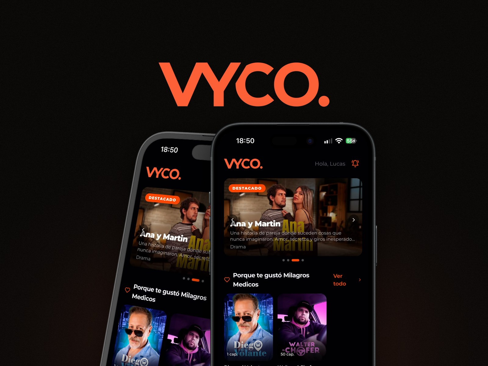
App for micro-novels and micro-fiction told in one-minute video episodes. I published it on the App Store and Google Play and integrated Google AdMob.
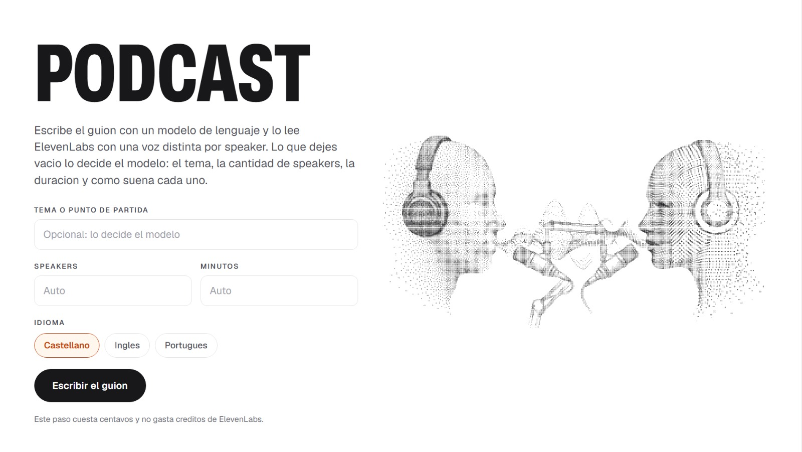
Automated podcast generator built for We Latam. Connects to the OpenAI API to draft scripts based on configurable parameters (topic, length, speaker count, and language), outputting the exact JSON schema required by ElevenLabs v4 API to assign distinct voices and render the full podcast audio.
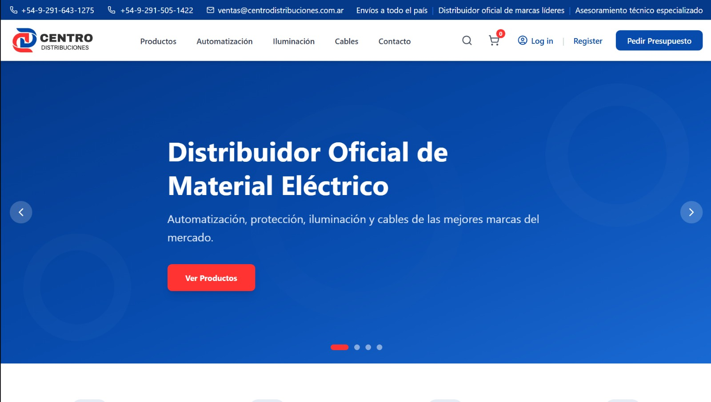
E-commerce site for a distribution company. Customers browse the catalog, fill a cart and place orders. The owner manages stock and orders from an admin dashboard. Optimized for SEO.
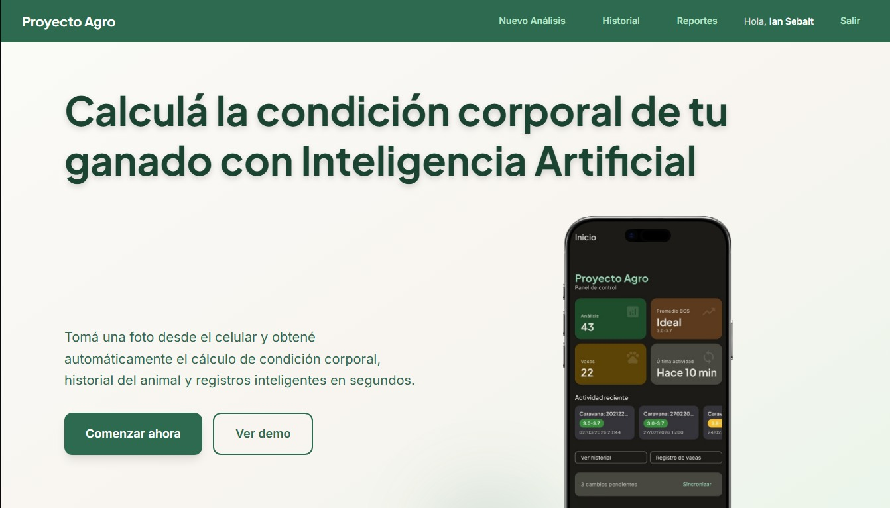
Web app for farm management. It shows the data the mobile app collects as charts and comparison tables, so a farmer can see how a herd changes between measurements.
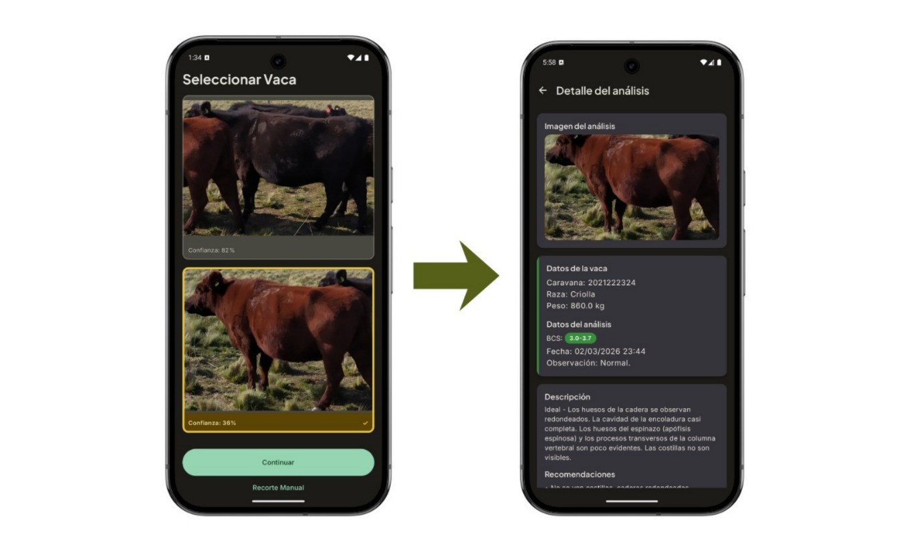
Mobile app that estimates a cow's Body Condition Score from a photo. The farmer takes the picture, a machine learning model returns the score, and the history feeds the web app.
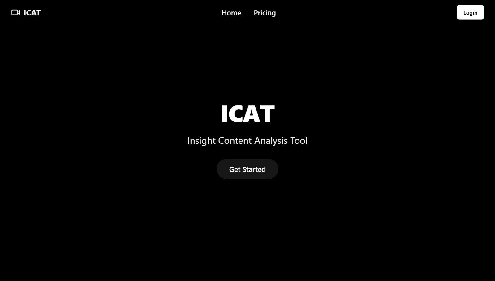
Insight Content Analysis Tool. Web app that analyzes scripts with AI. The owner took the database down, so the demo runs on mocked data.
Design and implementation of EUROCONTROL ASTERIX decoders in C++ and Qt for a radar console system within the Operational Analysis, Weapons and Electronic Warfare Service (SIAG).
Thirteen placements across twelve Argentine outlets between April and June 2026, all covering Proyecto Agro. The headlines are in Spanish.
Víctor Hugo Morales • La ingeniería y la ganadería: Lucas Bazan nos cuenta sobre Proyecto Agro
Néstor de la Iglesia • Ian y Lucas explican cómo crearon la app que ayuda a productores ganaderos
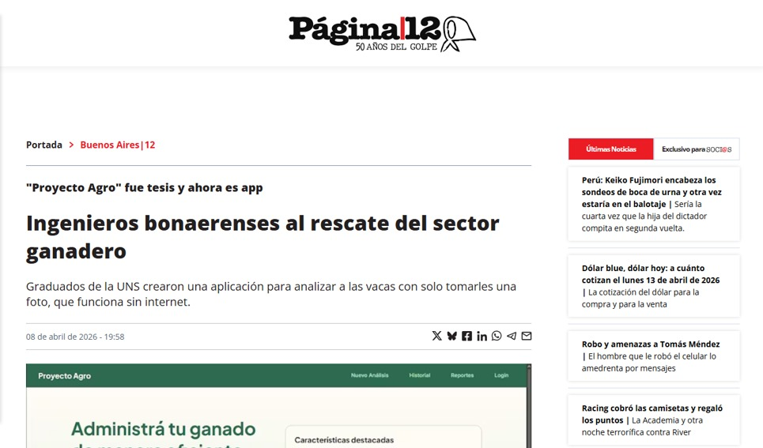
Ingenieros bonaerenses al rescate del sector ganadero
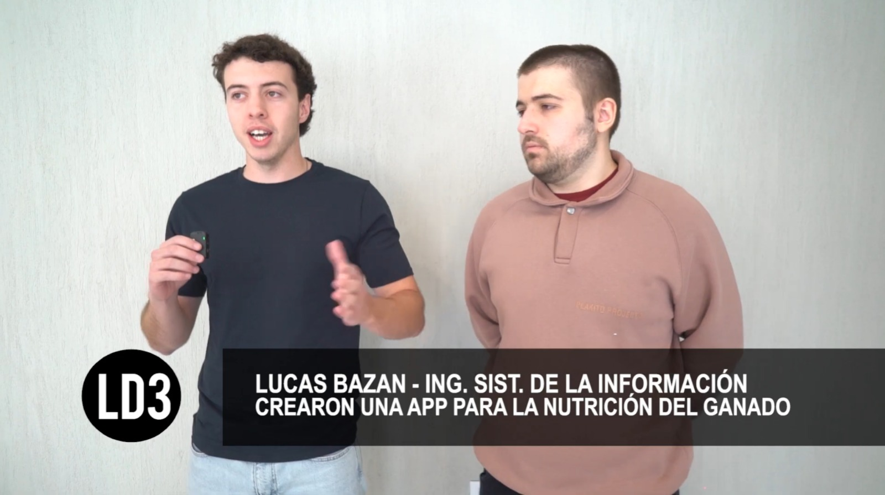
Línea de 3 • Novedosa app creada por estudiantes de la UNS para el productor ganadero
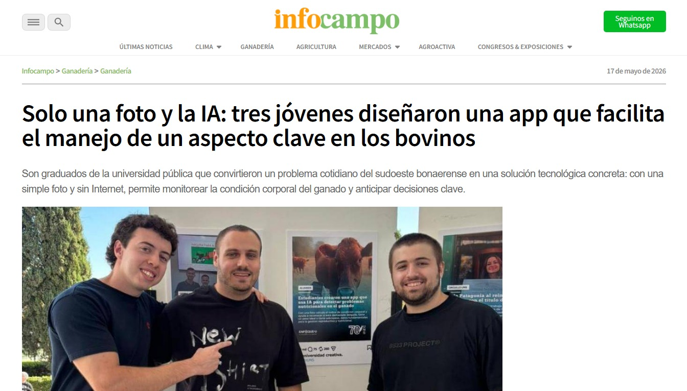
Solo una foto y la IA: tres jóvenes diseñaron una app que facilita el manejo bovino
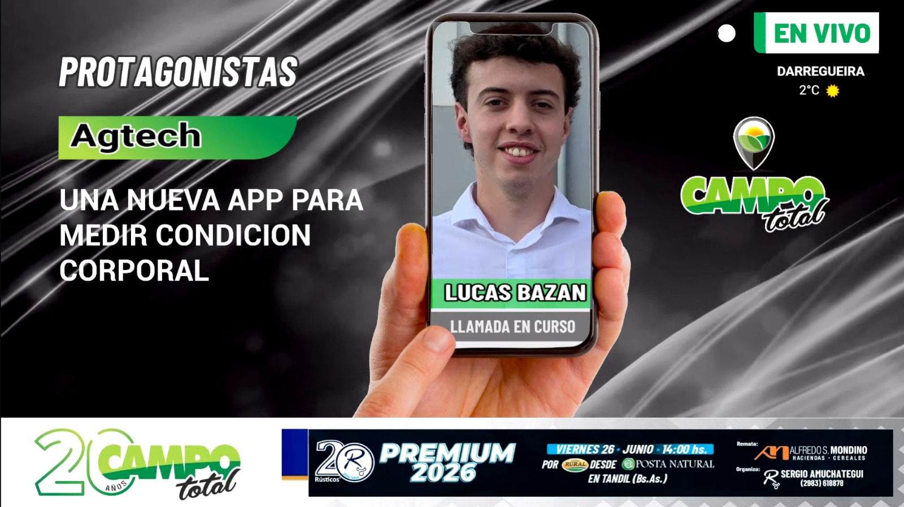
Proyecto Agro: una nueva app para medir condición corporal
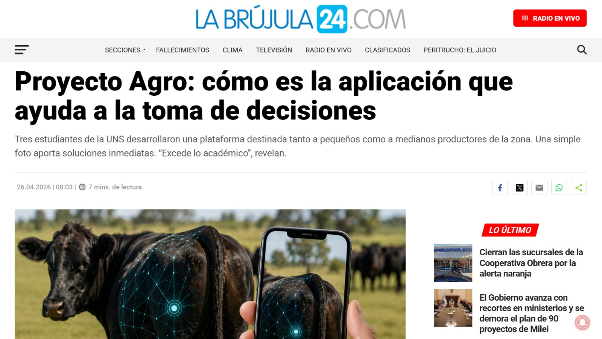
Proyecto Agro: cómo es la aplicación que ayuda a la toma de decisiones
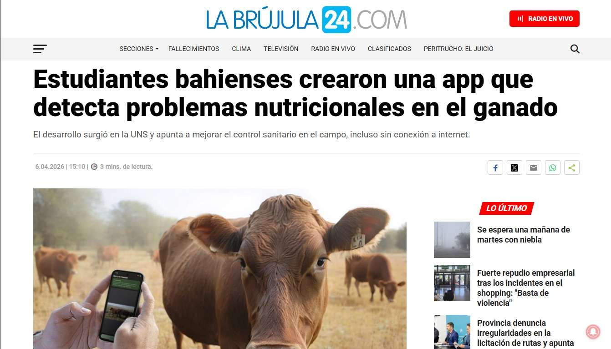
Estudiantes bahienses crearon una app con IA para ganado
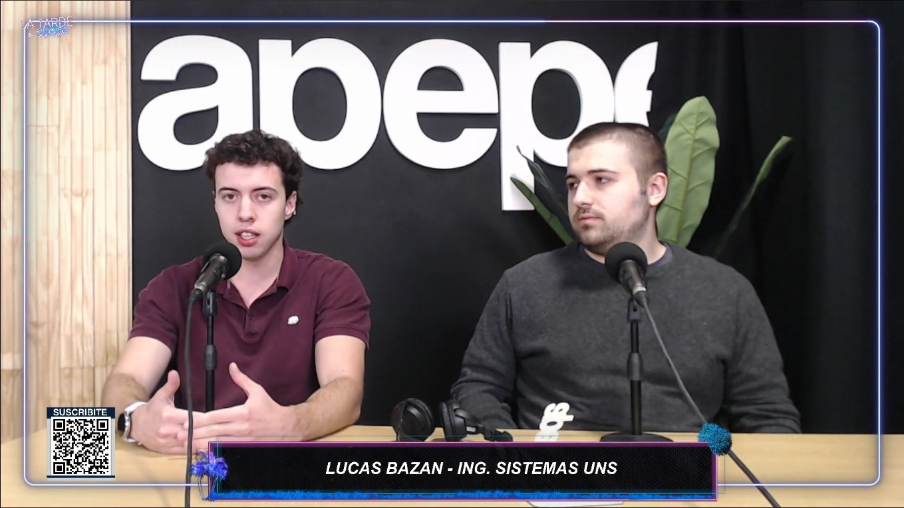
Proyecto Agro: crean una app con IA para controlar el peso del ganado
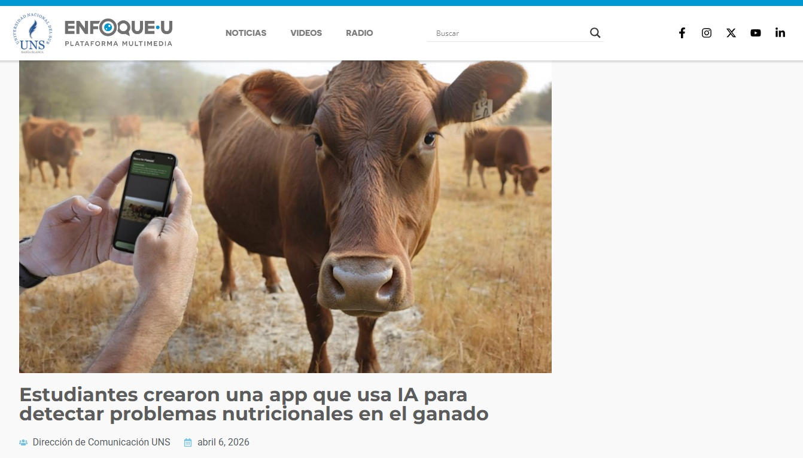
Estudiantes crearon una app que usa IA para detectar problemas nutricionales en el ganado
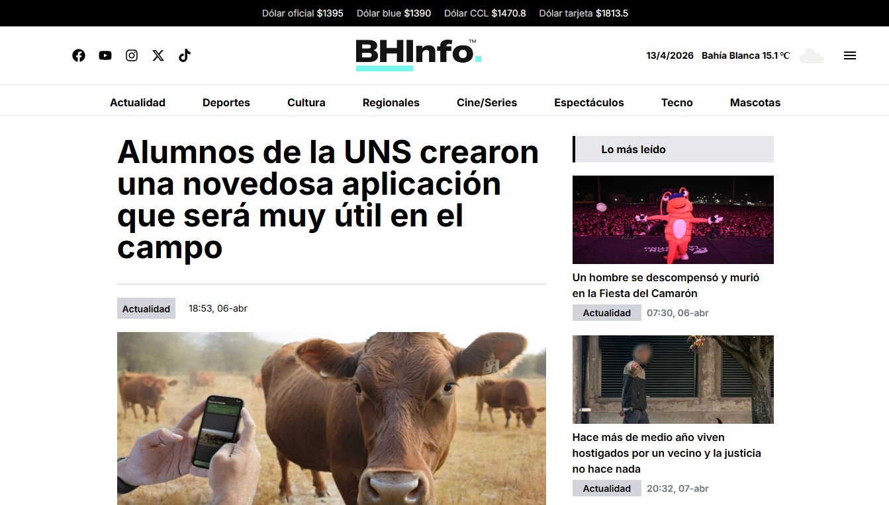
Alumnos de la UNS crearon una novedosa aplicación para el campo
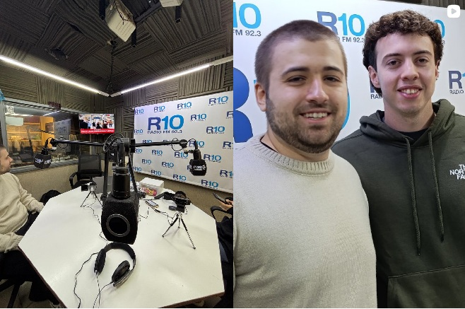
De Primera con Meneghini • Los creadores de la app visitaron los estudios de Radio 10
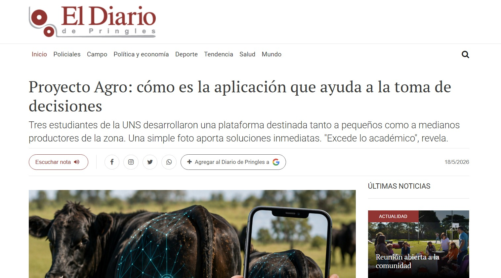
Proyecto Agro: cómo es la aplicación que ayuda a la toma de decisiones
I build web and mobile software that holds up under real use. Tell me what is breaking and I will tell you if I can fix it.